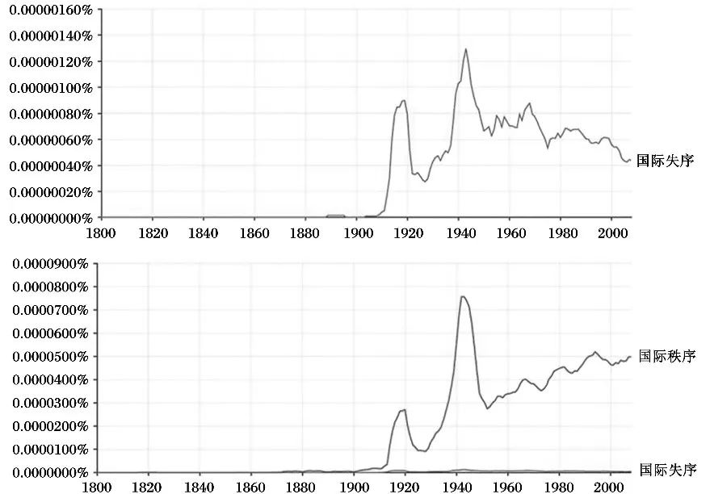

收录于合集

阿隆·麦基尔：如何理解“国际失序”的概念？
作者： 阿隆·麦基尔（Aaron McKeil），英国伦敦政治经济学院国际战略和外交硕士项目课程导师。
编译： 宋阳旨（中央党史和文献研究院第四研究部）
来源： 《当代世界与社会主义》2022年第1期
摘要 ****
尽管近些年学界内外对国际失序颇有兴趣，但对国际失序概念仍然没有达成一致。国际失序是有序的国际行为、规则和规范的毁坏，从而在国际事务中产生一种不稳定和不可预测的状况，这一分析性概念将国际失序的不同含义及其普遍影响，以及不稳定性、不可预测性等特质结合在一起。一个更加清晰、更加准确的国际失序概念对国际失序研究大有裨益，它展现出一幅更加完整的图景，体现了过去的国际秩序曾经多么有序；同时，也可以更清楚地掌握世界政治中秩序和失序之间的关系，有助于更深刻地理解国际失序问题。通过将国际失序的分析性概念应用于国际秩序的近代史之中，可以发现，国际失序与世界历史中的国际秩序存在生成关系，二者相互影响。 关于国际失序的分析性概念有助于具体化并明晰当今国际事务中发生的失序的范畴，对于国际关系和国际秩序的研究具有重要的现实意义。 在日后的研究当中，应当更加认真地看待国际失序的作用。
如今人们普遍认为国际关系正在经历日益严重的失序（disorder），人们对国际失序越来越关注。然而，尽管近几十年来学界内外对国际失序颇有兴趣，但对国际失序概念仍然没有达成一致，这一概念的应用常常是不严谨的，而且主要被用于危言耸听而不是用于分析性用途。如果不从理论上理解国际失序，就无法解决其在实践中产生的问题、应对其产生的影响。通常所谓的“国际秩序问题”，即如何实现国际秩序，在某种意义上就是缓解并规避国际失序的问题。在国际秩序研究中，对国际失序的理解存在概念缺失，从全球范围以及从日益严重的全球失序在实践中可能引发严重问题（例如，可能导致战争和经济混乱）的角度看，这也是一个重要的议题。鉴于此，本文旨在阐明并推动解决关于国际关系中日益严重的国际失序的争论。
01
国际失序概念
尽管国际秩序已经成为国际关系研究领域长期以来十分重要的主题，然而对国际失序却缺乏概念审视。 现有的关于国际失序的讨论主要围绕战争、革命和经济混乱展开，并没有对这一概念本身进行分析。当我们对这一概念进行考察时会发现，国际失序概念既空洞又模糊。如果国际失序是秩序的缺失，那么它是否什么都不是？反过来，如果国际失序是与国际秩序相反的或对立的，那么它到底是什么？如果它是战争和革命，那么它是否也是国际经济混乱和生态崩溃？如何将这些截然不同之事归入国际失序这一共同类别之中？

图1 国际失序和国际秩序的使用
（一）国际失序理念
从图1的N元模型图中可以看出，大约在第一次和第二次世界大战期间国际秩序和失序概念分别得到最为广泛的使用，出现了明显的峰值。
这表示两次世界大战导致的严重的国际失序，使得国际秩序和失序概念在政治话语中变得十分突出。然而，图1也表明，相比于国际秩序，国际失序这一概念很少被使用。这就表明， 在学术话语和公共话语中都相对缺乏对国际失序概念的关注。
从更根本上来说，社会生活在现代所设想出来的“国际”领域，使得这种国际秩序和失序观念成为可能。 这个观点并非无足轻重，因为它阐明了现代思维是如何界定国际失序的某些明确特征的。现代观念将“国际”视为主权国家“外部”或主权国家“之间”的一个领域，这就将国际失序界定为国家之间的某种东西（例如战争），或者是打破和超越边界和屏障的某种东西（例如跨国革命运动），这些边界和屏障划定了主权国家的界限。国际失序一般被理解为出现了一些与国际秩序相反的或对立的特质，这些特质就是国际失序概念常见的含义。我们至少能确定六个特质：国际不稳定性，即国际事务容易被暴力变革所伤害的状态，其典型特征为报复行为增加、军事姿态以及革命性不满规模扩大；国际不确定性或不可预测性，即不确定规则是什么以及行为者将采取什么行动，在这种状态下，政治家们不清楚外交关系的真实状况，敌友差别变得模糊，到处充斥着恐惧和不信任；国际犯罪行为，即公开或暗地里漠视国际法；国际政治纷争或争端，比如国际议题方面出现白热化的争端和分歧，尤其是关于基本国际原则的意识形态出现分歧；国际功能失调，即国际规则、规范和权威在功能上失效；最后是国际冲突和暴力，即真实的或假想的利益对立加速了公开敌对，最后导致战争。
从现实主义者的视角来看，国际事务是一个完全缺乏秩序的社会生活领域。 国际关系领域通常且合理地被描绘为现代世界极其失序的一部分，十分抗拒秩序并且总是受到极其严重的失序——战争的影响。这些观念和印象，尤其是现实主义的相关表述，是由一种特定的等级制的秩序概念衍生出来的，即认为国际关系是一种由国家构成的缺乏“维持秩序者”的无政府体系。然而，关于什么是“秩序”却存在争议，因为这一概念与其背后的价值观密切相关。例如，批判思想通常以正面的角度看待国际失序，赋予其积极的含义，因为批判观点将国际失序看做压迫性、剥削性秩序瓦解以及变革的产物。就这点而言，国际失序不能等同于国际不公正。然而，如今国际秩序背后的价值观都是现代价值观，后者的特征之一就是其“进步”性质。出于这一原因，通向国际秩序的现代路径的主要分歧之一就是，“进步”在多大程度上是可能的。因此，在这一话语体系中，失序常常等同于那些被认为阻碍了进步的暴力或障碍。但是这一观点也仅仅澄清了人们从根本上争论这一概念所基于的现代背景。
（二）向分析性概念发展
关于国际失序的各种不同概念之间存在争论，这些争论既是规范性的，也是理论性的，因为不同的理论提出并隐晦地持有关于国际失序来源的不同主张。例如，现实主义理论表明，无政府状态下无法掌控权力转移导致了国际失序；相反，自由主义理论认为，缺乏国际组织和跨国合作导致了国际失序。每种理论观点都倾向于将失序等同于关于其来源的理论，通过这种方式，国际失序的理论性概念从解释国际失序的国际关系理论中衍生出来。然而，我们更根本的目标是澄清国际失序的分析性概念，这种分析性概念可以用于分析国际失序的产生，但它并不一定认为关于国际失序的那些理论解释是正确的。
为实现这一目标，很有必要区分国际失序的各种不同含义。第一，国际失序常常指国际秩序的崩溃或缺失，或许最明显的是在战争的背景下——国际秩序几乎完全被毁坏，但不局限于这种情况；第二，国际失序也被用于指不负责任的外交政策及行为，这种行为违背或削弱秩序，并引发不稳定性和不可预测性，例如，一意孤行的非法战争，或为图便利而违反国际条约；第三，国际失序也常在评估意义上被使用，用于指国际秩序的愿景与现实之间的落差，即人们希望国际秩序所能实现的目标与其现实的局限性之间的失调或落差。 通过这些不同含义，我们能够区分国际失序的三个观念。 第一，有序的规则或制度的破裂或缺失，或者是因为这些规则或制度尚不完善，抑或是因为它们已经崩溃，均会出现失序。第二，国家漠视和打破秩序的行为会导致秩序的崩溃或缺失，从而引发失序，我们称之为失序的国际行为——对抗或违背秩序的行为，即秩序中的失序（disorder in an order），这种失序在广度上来说不足以颠覆秩序本身。第三，有缺陷的或无效的秩序中也存在失序，这就是秩序的失序（disorder of an order），即秩序本身无法实现其目标和意图，例如，侵略性的、一意孤行的战争就是国际事务中失序的案例。这些行为、规则、规范本身就是不充分的，即使得到了遵守，也会导致国际事务的失序。
从某种意义上说，这些思考方式将失序看做秩序的缺失、违背或匮乏。有可能提出一个更加实质性的概念吗？ 赫德利·布尔（Hedley Bull）提出的国际秩序概念十分清晰和敏锐，因而得到广泛的使用和推崇， 他指出了失序的一系列特征，有助于澄清世界政治中的国际失序的含义。布尔是这样论证的：“当我们谈及社会生活中与失序相反的秩序时，我们脑海中所想的并非社会现象中的任何模式或井然有序的安排，而是某种特定的模式。在人或群体与其他人或群体发生暴力冲突的行为中，这种模式可能很明显，而这种情况我们应称之为失序。主权国家在战争和危机境况中可能会以规律的、方法论式的方式行动；在霍布斯所描述的自然状态下生活的个人，他们的行为也可能会遵守某些周期性模式，实际上霍布斯自己也承认他们确实是这样；但这些都是失序而不是秩序的例子。”
布尔进一步论述了他关于国际秩序的备受推崇的定义：“维持国家间社会或国际社会的基本或主要目标的一种活动模式”。因此，布尔关于国际失序的观念可能会被定义为“破坏或否定国际秩序参与者所期望的目标的一种活动模式”。这是个很有吸引力的定义，因为它强调了失序的活动模式，尽管我们意识到，对于秩序的目标是什么存在一定的争议，尤其是如果我们根据秩序参与者所期望的去界定这些目标，就更是这样。
通过布尔的论述，我们可以开始进行更深入的概念性阐释。首先，进一步审视布尔的概念会导向一种社会学观点，即国际秩序和失序常常被看做是一种持续进行的活动过程，实际上也确实如此，布尔的“活动模式”观念指的是产生秩序的行为；其次，因为布尔指出他对国际秩序的定义是“最低限度的”（仅限于国际事务的基本或主要目标），这就意味着国际失序概念是“最高限度的”，因为只有破坏或否定国际社会最主要的目标才构成国际秩序的对立面。破坏或否定任何国际秩序的可能性就算是国际失序。布尔还区分了国际秩序和世界秩序，前者意味着国家之间的秩序，后者意味着国家之间和人与人之间的秩序，以一系列“国内”秩序为组织形式。 就此而言，没有国际秩序，世界秩序就不可能存在，国际秩序的实现似乎常常伴随着世界失序，甚至以后者为代价。
然而，虽然布尔帮助澄清了这一概念的重要方面，但关于他的概念性推理的讨论目前只能朝一个分析性定义发展。在这些分析性定义中，有些强调行为模式，有些强调制度性规则和规范。为了调和这些定义，我们可以在分析时指出，国际秩序是能够为国际关系提供一定程度的稳定性和可预测性的行为模式、规则和规范。有必要指出，这一概念调和了实现秩序的方式与秩序特质以及国际稳定性和可预测性的条件。秩序既是一种事务的状态，也是一种特质或条件。实际上，国际秩序倾向于自发地或通过设计好的制度产生秩序特质，但在不同时期，其成功的程度各不相同。由于秩序特质的多样性，必须要强调，分析上谈到的有序的行为、规则和规范不同于它们所实现的秩序特质。通过这一定义，我们可以说，当不同预期的行为模式、规则和规范应用于不同种类的关系时，就会产生许多截然不同的国际秩序。然而，秩序也可以嵌套于更大范围秩序内部存在的多重秩序之中。例如，冷战期间的国际体系就分叉为西方秩序和苏联主导的秩序，但这两者都处于更大范围的联合国体系的秩序中。当预期的行为模式、规则和规范改变时，秩序中的改变（change in orders）就会发生；当主要的秩序预期、规则和规范改变时——最典型的就是在重大战争之后——秩序的改变（change of orders）就会发生。但是，当单元（units）本身改变时，体系的变革更为根本，就像现代体系从中世纪体系中产生那样。
在此基础上，我们提出国际失序的分析性概念，将国际失序看做是对有序的国际行为、规则和规范的毁坏，从而在国际事务中产生不稳定和不可预测的状况。 这一分析性概念将国际失序的不同含义（包括国际秩序的崩溃或违背国际秩序）及其普遍影响，以及不稳定性、不可预测性等特质结合在一起。把这些因素和它们产生的影响结合起来很重要，因为有序的行为、规则和规范的崩溃可能至少会涉及一种稳定的、可预测的秩序重建过程，这将在国际事务中产生更多的稳定性和可预测性。然而，在这一定义中使用“毁坏”而不是“缺失”或者“否定”一词的额外好处就是，它使失序概念摆脱了与秩序的二元关系——一者的存在则推定另一者的缺失，因为秩序在没有被完全否定的情况下，也会被打乱和毁坏。这使我们能够更加仔细地评估国际秩序中呈现的更完整的失序图景。最后，笔者必须承认，如果我们认为稳定性和可预测性属于国际秩序的主要或基本目的或功能的话，那么关于国际失序的分析性定义从某种程度来说仍然是规范性的。这种看法是有道理的，因为在其他结果和预期之间，国际秩序似乎确实倾向于产生一种国际稳定性和可预测性的状况。 鉴于此，文中所提出的分析性定义应当区分于有关这一概念的纯粹评估性和规范性定义。
02
昔日的国际失序：
1919年、1945年和1989—1991年
那么这一分析性概念是如何阐明国际关系中的失序的？首先，它呈现了一幅更加完整的图景，以展现过去的国际秩序曾经多么有序。也就是说，国际秩序研究聚焦于秩序的实质和生成秩序的过程，但却忽略了秩序所涉及的甚至是由秩序生成的各种失序。其次，除此之外，更加关注国际失序揭露的自身深刻的历史特性，在历史发展中，失序的经验往往能够塑造有序的制度。这进一步表明，国际秩序研究过去或许过于狭隘地关注霸权和塑造秩序的大国，而更深入地研究失序如何改变人们认为行之有效并竭力发展的秩序，对于国际秩序研究大有帮助。更精炼地说， 国际失序与世界历史中的国际秩序存在生成关系，二者通过生成过程相互影响。
运用上文提出的国际失序概念，我们会发现，国际秩序中也存在类似趋势，即建立用于防止上一次失序的国际秩序。在现代国际秩序的历史中，显然有一种试错的过程在发挥作用，但是，秩序和失序之间的关系要比这更深，需要阻止什么样的失序以及需要什么样的制度，相关的观念是由历史上特定的失序事件所产生的历史经验所塑造的。例如，19世纪“欧洲协调”的一个显著特征就是，它将外交议会体系和审慎的均势结合在一起，用于避免竞争性均势和另一个革命性霸权的崛起。相关例子证明， 国际秩序会导致“偶然失序”，削弱和破坏国际秩序的惯例和事件会生成试图阻止那些破坏行为的新的惯例和制度，为此应当创造一个新术语。
为论证这一点，有必要区分产生秩序的不同类型的制度。国际秩序易于形成“管理”或“控制”国际关系的制度，但我们也注意到，国际秩序通过两种完全不同的制度类型来实现上述目的：促进合作和追求共同利益的平台以及为防止之前的国际失序再次发生而设计的制度性防护措施。在后面的案例研究中可以发现，为防止失序而设计的防护制度，是用于防止发生优势大国所感知的失序，但是，对于这种趋势的解释不仅存在于优势大国的力量分配或特质中，也存在于参与者的信念和前景变化中，即它们对国际失序的根源和失序需要阻止什么有了新的理解，从而无法再相信旧秩序的前提和假设。毫无疑问，大规模战争中的胜利和失败对于产生和摧毁什么秩序来说极其重要，但要指出的是，对于这一重要事实的关注不应该遮蔽另一个重要事实：曾经发生过导致超强失序的大规模战争，它们影响了整个时代的性质和随后可能建立的一切秩序的更深层的内在逻辑。此外，对这一模式的关注表明，防护制度的这种反向特质倾向于生成新的无法预料的失序。
审视两次世界大战之间的秩序、冷战秩序和后冷战秩序能够阐明国际失序在国际秩序中的作用，同时为澄清当今国际关系中日益严重的失序提供一种必要的背景。选用这些案例还有一个好处，就是能够为国际秩序和失序的生成机制的历时性分析提供三个连续的案例。
（一）1919年和两次世界大战之间的秩序
一战中显现的严重失序使得新的国际制度以前所未有的规模建立起来。 最重要的可能就是通过国际联盟寻求集体安全和公开外交，国际联盟的设立是为了避免错误计算和取缔均势体系，这两者往往被看做是一战爆发的关键原因。毫无疑问，这一时期伍德罗·威尔逊（Woodrow Wilson）提出建立的机构——国际联盟——对于如何设想和建立新的国际制度来说至关重要，但是他所倡导的国际联盟理念受到历史背景的限制。威尔逊在1919年9月的著名宣言中清晰地展示了他的论断：“我能肯定地预测，如果世界各国不协调行动方式以阻止战争，那么一代之内还会发生另一次世界大战。”国际联盟的理念不是威尔逊独自提出的，在1915年世纪俱乐部（Century Club）在纽约召开的一次专家会议上，这一理念首次被提出。英国战时委员会和工作组讨论战后秩序问题时，也普遍赞同这一倡议。大卫·劳合·乔治（David Lloyd George）领导的政府委员会主张，国际联盟的目标应当是阻止另一次世界大战，而不是统治世界。他们认为，一战是由错误计算导致的，通过新的探索和延缓机制，世界大战在未来是可以避免的。乔治·克里蒙梭（George Clemenceau）和1919年的法国代表团原则上支持建立国际联盟倡议，但他们提出，联盟应当包含一支能够维持和平的国际军队，因为他们觉得“无剑之约”（covenants without swords）是无效的。然而，该倡议最终被其他大国否决了，取而代之的是克里蒙梭坚持的强加于德国的惩罚性赔偿。这并不意味着德国输掉了战争无关紧要。如果说苏德《布列斯特—立托夫斯克和约》的惩罚性条款体现了德国战后的意图——协约国是这么认为的，那么德国领导人的目标就是扩张德意志帝国的领土、惩罚战败国并将德国确立为欧洲霸主。德国并没有从一战中获利，而是感觉自己深陷战争的泥淖，所以德国当时很可能寻求建立能遏制战争根源的保障。虽然我们不清楚德国领导人所认为的战争根源究竟是什么，但可以肯定的是，削减法国和意大利的领土和生产力以及使一些附属国未来无法造成重大威胁，似乎能够阻止战争。因此，大规模战争之后哪些国家占据优势肯定至关重要，但重点是， 有关预防性制度和惯例的理念都是由战争经验生成的 。
1919年之后订立的两个更进一步的条约——1921—1922年华盛顿会议签署的《关于太平洋区域岛屿属地和领地的条约》和1925年的《洛迦诺公约》——巩固了两次世界大战之间的秩序。作为一种值得注意的秩序重组措施，1928年《白里安—凯洛格公约》脱颖而出，它试图宣告战争的使用非法化。 但与国际联盟差不多，这一体系激进的合法化秩序重组很有问题 ，无法作为防止战争的制度，因为虽然该体系禁止战争，但除了对条约本身的承诺和保证，它缺乏能够遏制或消除战争根源的机制。这无意中使得国际联盟丧失了维持和确保安全的能力，因为签署国禁止自身使用战争手段。如果一个好战的国家渴望战争，国际联盟的调停和仲裁等机制根本无法加以阻止。
除了国际联盟和战争非法化之外，还有一个更值得注意的秩序重组措施，即关于少数民族权利的新逻辑和新秩序，虽然这一措施有很大的局限性。 少数民族问题既是公认的触发战争的因素之一，也是战败帝国崩溃的后果之一。鉴于此，虽然1878年的《柏林条约》确立了少数民族和新独立国家的标准，但是这些标准的逻辑却在战争过程中成为一个实际问题。曾任国际联盟少数民族问题部主任的帕布鲁·德阿兹卡拉特（Pablo de Azcárate）解释道：“那些条约向国际联盟承诺保护少数民族，其目标是避免许多过去发生的国家间的摩擦和冲突，这也是频繁虐待或镇压少数民族的后果。”然而对战胜国来说，由于没有关于少数民族权利的普世性秩序，这一问题陷入了尴尬。在两次世界大战之间的秩序中，这一问题也普遍让人感到失望。虽然战胜国获得了战败国殖民地的授权并干涉东欧“新独立国家”，但却没有建立应用于它们自身帝国或内部事务的少数民族权利规则或规范。
（二）1945年和冷战秩序
两次世界大战之间秩序的消亡——无论是否不可避免——再次生成了关于失序原因和阻止失序方式的新观念。 以1941年的《大西洋宪章》为开端，随后进行的一连串同盟会议，为《联合国宪章》和二战后国际秩序奠定了基础。联合国安理会的创立旨在通过一个永久性的大国管理委员会来防止偏离和平，这是一个重要的制度性调整。1940年，美国国务院提出的战后秩序纲要指出，应当用一个配备武装部队的大国执行委员会，取代国际联盟关于集体安全的“全体一致”机制。1941年，在与丘吉尔第一次会面时，罗斯福提出，美英两国应当“监管”（police）国际秩序，逐步建立一个起作用的国际组织。1942年，英国外交部与美国国务院协商后制定了《四国计划》（Four Power Plan），这是一种由美国、英国、苏联、中国共同管理安全的“四国警察”模式。在1943年的德黑兰会议上，罗斯福迫切推动这一计划，斯大林原则上表示支持，但他指出，这一计划需要通过各自的区域委员会而不是通过全球合作来实施管理。在苏联看来，国际联盟失败的教训证实了帝国主义大国将不可避免地陷入战争。斯大林在战后的目标是在下一次不可避免的冲突中保证自身安全。他支持并加入联合国安理会都是为了通过提供一种制度性保障来实现这一目的，同时也是为了与西方大国维持一种团结的假象。
国际货币基金组织是为构建二战后秩序而产生的另一个制度，其目的是为了防止预先察觉到的失序。 大萧条的经历使人们认为国际货币和金融秩序失灵了。为了修正这种秩序，约翰·梅纳德·凯恩斯（John Maynard Keynes）提出新的国际货币计划并规定了一套国际义务。亨利·德克斯特·怀特（Henry Dexter White）提出了另一个美国方案。他们共同的志向是通过建立机制来保留公开市场，这些机制的目的在于防止国家需要保护其市场的情况发生。这两个方案在布雷顿森林会议上达成一致，该会议奠定了国际货币基金组织的基础，会议的目的在于通过成员国管理汇率，并在必要时为其提供金融支持来保留公开市场。世界银行、关税和贸易总协定以及国际货币基金组织相辅相成，构建了二战后的世界经济秩序，但它们更多的是一种用于恢复和开放市场的平台。国际货币基金组织主要用于防止市场再次解体和关闭。随着这种经济秩序的发展，它遭遇了新的挑战和根本性变化，尤其是尼克松在执政期间放弃了“金本位”机制。尽管如此，这一秩序对人们所感知的两次大战中经济失序的原因作出了直接回应，在这一过程中其初始深度和特征已经被塑造出来了。苏联与西方国家关于两次大战间经济失序的观点截然不同。苏联认为，资本主义本身导致了两次大战间的经济繁荣和失败。这并没有阻止苏联参与布雷顿森林会议，苏联也没有坚决拒绝参与新的经济秩序，但是苏联拒绝批准此次会议上达成的协议。
罗斯福早期想要把这种战后秩序变得更精细，也更易于向美国公众“兜售”，因为他希望避免威尔逊的错误，即在公众支持的范围以外作出承诺，从而阻止战后的失序，许多人将这种失序归咎于美国在两次世界大战期间的孤立主义。然而，冷战的突然发生使得美国对欧洲以及西半球以外地区的兴趣超出了罗斯福的预期。苏联和西方国家之间发生冲突，以至于出现了两种秩序，共同制度的范畴和规模被限制在最低限度内。例如，冷战的核秩序如何？一种观点认为，广岛和长崎的原子弹爆炸将阿尔伯特·爱因斯坦（Albert Einstein）等高级知识分子带入公众视野，从而断定有必要建立世界政府来阻止冷战双方的核战争。但是，一旦核武器的扩散使得双方的核战争变得有可能，政治家们就会试图阻止这种可能性，这么做或许并不是基于过去的经验，而是因为深知核战争在未来将导致的后果。20世纪六七十年代出现的核秩序包含了两种预防性的措施：不扩散和威慑。《不扩散核武器条约》禁止共享核武器，有核国家承诺进行裁军，承认国家为和平用途使用核能的权利。然而，威慑的逻辑并不会将有核国家引向裁军，因为威慑要求有核国家保留具有毁灭性二次打击能力的核武库。威慑体系的来源可追溯到美国的“大规模报复”原则，即利用核打击的威胁来制衡苏联的常规军队。但在苏联拥有核力量之后，威慑秩序最终以“相互确保摧毁”原则为基础，其逻辑旨在通过双方均拥有可靠的大规模二次打击能力来阻止核战争。然而， 这种实现秩序的路径要求进行军备控制，而军备控制总是受限且不确定，新技术、新行为体和周期性军备竞赛的出现也一次又一次地破坏军备控制。
最后，是去殖民化的兴起。 它不完全是由二战导致的，但也不能说与二战毫无关系。虽然二战在全球范围内削弱了欧洲的力量，但是，催生阻止殖民主义延续和卷土重来之制度的，是大部分人类遭受的殖民主义的失序经历。这种殖民主义的失序经历深深地影响了后续国际秩序的特性，主要是在主权的全球化（globalization of sovereignty）方面，目的在于阻止殖民主义的深化。当然，非殖民化过程并未完全阻止新帝国主义的出现，但关键在于， 现代殖民主义的失序对现代国际体系的特性和制度性安排产生了持续性的后殖民影响。 例如，殖民主义的失序也塑造了冷战的特性，因为两个超级大国都试图将他们在南半球的行动理由合法化并争取支持，它们将自己描绘成反对帝国主义，将对手描绘成帝国主义。
（三）1989—1991年和后冷战秩序
当苏联突然解体、冷战最终结束时，出现了建立“新的世界秩序”和持久和平的诉求。人们对联合国重燃希望和雄心，并通过扩大的世界贸易组织、亚太经济合作组织和北美自由贸易协定实现全面全球化的市场，促进民主和人权也再次被确定为全球议程。 这些目标旨在预防人们所认知的两极格局所带来的失序。 冷战之后，美国一直以来都奉行通过安全和经济俱乐部获利的领导模式，如果将这种霸权领导模式全球化，则有可能提供一种统一性处方，用于防止分裂体系带来的弊端。相反，如果苏联胜利了，苏联领导人也很可能寻求类似的后冷战秩序，特征与美国完全相反：苏联霸权、促进全球共产主义和全球计划经济。 冷战带来的负担和不安很可能使得美苏两国也竭力防止冷战秩序的失序。
后冷战秩序未能阻止迅速出现的新的失序。 第一次海湾战争是新秩序和民族主义崛起的第一次尝试，同时种族冲突给这种后冷战秩序带来了进一步的挑战。最重大的事件可能就是2001年的“9·11”恐怖袭击。2003年美国在伊拉克战争中持续推行的单边主义摧毁了后冷战秩序，这削弱了美国领导的可预测性，增加了全球的不稳定性。
03
新的国际失序
如今人们对国际失序的兴趣日益浓厚，那么 一个精炼的概念如何有助于明晰国际失序？
第一，关于国际失序的分析性定义有助于具体化并明晰当今国际事务中发生的失序的范畴。 特朗普政府退出国际条约，以及特朗普对美国的盟友实行外交疏远的言论，在国际事务中创造了一种不确定和不可预测的情况，这不仅仅是因为很多人不清楚这些行动是否符合美国的利益，也是因为美国正在毁坏许多其曾经大力支持的制度，这对许多观察者来说十分可怕。特朗普政府退出《关于伊朗核计划的全面协议》也增加了不稳定性。这种失序并非源于美国在后冷战秩序中的中心地位，而是因为美国拥有超强的相对力量且在维持秩序的制度中占据中心地位，这使得美国的失序行为既削弱了对秩序的主要支持，也让其他国家几乎无法对此加以限制。然而，关键在于，特朗普政府并未退出一些更加有分量的制度，例如北约和世界贸易组织，虽然它已经对这些制度造成了威胁，所以这种失序的程度尚不足以颠覆后冷战秩序。尽管如此，特朗普政府的失序行为也已经削弱并挑战了“美国对后冷战秩序的支持”的假设。
第二，对失序概念及其与秩序之间关系的密切关注引发了有意思且很重要的问题：当代失序的经验可能为重建秩序提供什么样的动力？ 有趣的是，许多中等强国，例如加拿大、澳大利亚和德国，对此的回应是试图保留后冷战时代的“基于规则的秩序”，尽管它们也承认需要进行一些改进。这些国家希望美国回归更加可预测和更加合作的外交政策，虽然并不清楚美国是否会这么做。由此看来，这也意味着如果这种失序持续下去并且变得更糟，可能会引发更多重建秩序的倡议，从而（至少是尽可能地）将美国这种失序行为的伤害性降到最低。这些新的“绝缘”（insulating）制度将以三种普遍形式呈现：（1）放弃目前以美国为中心的制度，支持新的区域性、全球性安全和经济制度，消除对美国霸权的依赖；（2）将目前以美国为中心的制度复制成新的区域性、全球性安全和经济制度，作为制度性保障，在异常霸权时期，或许可以求助于并依赖这种制度性保障；（3）把（1）和（2）结合起来。鉴于在国际事务中实质上不可绕开美国，同时当代秩序的许多主要制度都是长期存在的，而且这些制度没有被美国废除，所以各国将很有可能复制这些经济和安全制度，使它们的关键利益免受异常霸权带来的伤害。小国和中等强国无法忽视或有效拒绝霸权国家，但它们可以额外建立新的制度以限制和阻止对它们的全面伤害。这就意味着，北约和世界贸易组织等制度可能会继续存续，但是根据美国单边主义的程度和持续性，它们有可能越来越嵌套于额外的、重叠的区域性、全球性安全和经济制度网络之中。
第三，现存制度的持久性取决于当前的国际体系，后者避免了更严重的国际失序现象——尤其是大国战争。 这种战争不大可能会发生，但不是完全不可能。如果这种战争发生了，且如果人类最终得以生存，那么它将从根本上产生更广泛、更深层的国际制度变革。这种战争将呈现很大强度的失序，从而清除主流国际秩序并使其永久失效。有鉴于此，很难预测这种失序可能生成何种制度，因为后者的建立从本质上来说是为了构建一种全新的国际秩序。相反，更大的可能性是这种冲突得以避免，许多观察者指出，如果是这样的话，那么现阶段的失序正在以一种潜在的、更加分散的或更加公平的方式分配规则制定的权力和权威，从而推动国际体系的秩序重建，产生分散的全球主义者的或“多元的”层层嵌套着区域秩序的世界秩序。这种观点有些道理，因为忽视秩序的美国外交政策，让美国的盟友们越来越认识到对美国力量的过度依赖，而新兴大国则在推动关于多极化和多中心秩序的其他视角。因此，这些构成后冷战秩序的制度将继续存活，但是取决于当代失序的程度和持久度，这些制度也可能越来越嵌套于更深化的区域性和全球性制度，用以防备美国的失序性政策。
04
结论
国际关系和国际秩序研究越来越重视国际失序的作用。 研究国际失序为补充国际秩序研究提供了一种有趣的且意义重大的研究议程，这种议程不仅要考虑在昔日秩序中发生的失序的广度，以及世界政治中有序模式和失序模式间的关系，同时也要考虑各种世界秩序模型在何种程度上缓解或促成失序。 例如，在拿破仑的法国失序之后出现了“欧洲协调”，亨利·基辛格（Henry Kissinger）在其对“欧洲协调”的经典研究中指出，虽然梅特涅“‘没有过去的人也不可能拥有未来’这一主张可能是正确的，但那些拥有过去的人如果在未来还固守过去的话，很可能会毁掉自己”。这个关于“欧洲协调”的观点一针见血，但是考虑到失序的作用，我们也可以认为，自1919年起的国际秩序与其说是固守过去的秩序，不如说是希望在未来能阻止过去的失序再次发生，因而它并未被毁掉。两次世界大战期间，各国试图通过集体安全和战争非法化来阻止第二次世界大战，但这种秩序很容易被通过战争追求个体安全的行为所伤害。同样的，二战后试图利用联合国安理会框架内改进的大国管理机制来阻止失序，但这种秩序很容易受到大国敌对的影响。最后，冷战后试图通过美国支持的全球性制度防止冷战分裂的再次发生，又使得秩序很容易被忽视秩序的美国外交政策所伤害。虽然没有一种国际秩序能够为不可预见的历史因素和历史事件做好准备，但即使竭尽全力阻止，秩序却出现了形式独特的失序，这是事实。
排版 | 彭凌懿
本文章来源于《国际关系》（ International Relations ） 2021年第2期，总第35期，本文已得到作者授权。
文章观点不代表本平台观点。